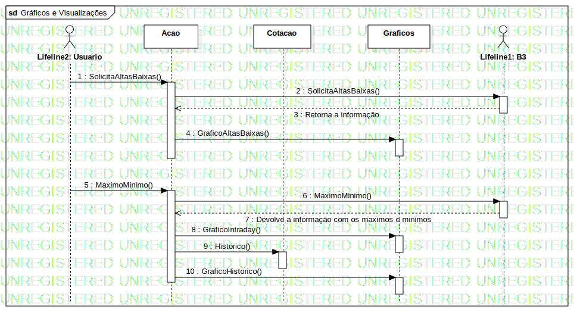

Interaction1
UMLInteraction
Untitled
::
Model1
::
Graficos e Visualizações
::
Interaction1
Description
none
Diagrams

Gráficos e Visualizações
Participants
Lifeline1: B3
Lifeline2: Usuario
Graficos: Graficos
Acao: Acao
Cotacao: Cotacao
Messages
Message1 (Lifeline2→Acao)
Message2 (Acao→Lifeline1)
Retorna a informação (Lifeline1→Acao)
Message3 (Acao→Graficos)
Message4 (Lifeline2→Acao)
Message5 (Acao→Lifeline1)
Devolve a informação com os maximos e minimos (Lifeline1→Acao)
Message6 (Acao→Graficos)
Message7 (Acao→Cotacao)
Message8 (Acao→Graficos)
Properties
Name
Value
name
Interaction1
stereotype
null
visibility
public
isReentrant
true
Owned Elements
Gráficos e Visualizações